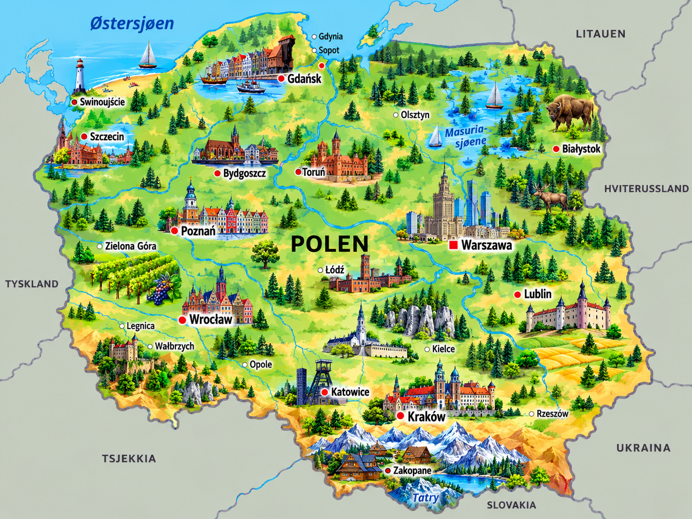
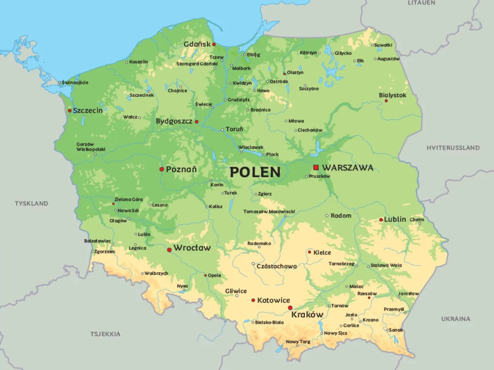

⚡ Korte fakta om Polen
🗺️ Kart over Polen
Klikk på et av kartene for å åpne og zoome i fullskjerm!


1. Natur og klima
Polen er et stort og variert land i Sentral-Europa med alt fra lange sandstrender i nord til høye, spektakulære fjell i sør!
Rysy i Tatrafjellene er Polens høyeste topp, hele 2 499 meter over havet!
I nord har Polen lange sandstrender langs Østersjøen og flotte kystbyer som Gdańsk.
Området kalles «De tusen sjøers land» og har over 2 000 vakre innsjøer knyttet sammen av elver.
Dyreliv: I den berømte Białowieża-skogen bor europas største pattedyrsart, visenten (européisk bison). Her finnes også ulv, gaupe og bjørn!
2. Folk og samfunn
I Polen bor det ca. 37,5 millioner mennesker. Polakker er kjente for sin store gjestfrihet og rike kultur!
🏢 Største byer i Polen
- 🔹 Warszawa: Hovedstaden som ble bygget opp igjen etter 2. verdenskrig!
- 🔹 Kraków: Den historiske vakre byen med det berømte slottet Wawel.
- 🔹 Andre store byer: Wrocław, Łódź, Poznań og Gdańsk.
🥟 Tradisjoner & Mat
Et av de mest kjente ordene og matrettene i Polen er «Pierogi» – fylte deigputer med ost, poteter eller kjøtt!
Polen har også en sterk tradisjon for feiring av navnedsdager, jul og påske med masse god mat.
🗣️ Språk og kultur
I Polen snakker de polsk. Det er et slavisk språk som bruker det latinske alfabetet, men har noen ekstra bokstaver som Ą, Ę, Ć, Ł og Ż!
3. Stat og politikk
Polen er en republikk og et parlamentarisk demokrati, styrt av en valgt president og statsminister.
Laster...
Polens president og statsoverhode.
Laster...
Statsministeren som leder regjeringen.
Sejm og Senatet
Det polske parlamentet i Warszawa.
📍 Polen er delt inn i 16 fylker (kalt województwo).
4. Polens historie
👑 Grunnleggelsen (966)
Hertug Mieszko I lot seg døpe og samlet de polske stammene. Dette regnes som Polens fødsel!
⚔️ Stormaktstiden (1569)
Polen gikk sammen med Litauen og skapte en av Europas største og mektigste stater på den tiden.
 Grunnloven av 3. mai (1791)
Grunnloven av 3. mai (1791)
Polen vedtok den første moderne grunnloven i Europa! Dagen feires som nasjonaldag i dag.
🕊️ Frigjøringen og Solidarność (1980–1989)
Fagforeningen Solidarność, ledet av Lech Wałęsa, kjempet for frihet og bidro til at kommunismen falt i Europa.
🇪🇺 Medlem av EU og NATO (2004)
Polen ble fullverdig medlem av den Europeiske Union (EU) og har hatt stor økonomisk vekst siden.
5. Økonomi og næringsliv
Hva lever de av i Polen? Polen har en stor og moderne økonomi kjent for alt fra teknologi og spillutvikling til landbruk!
Spillutvikling
Verdensberømte spill som «The Witcher» lages i Polen.
Landbruk
Polen er en av Europas største produsenter av epler og grønnsaker.
Industri
Stor produksjon av biler, maskiner, møbler og elektronikk.
Rav (Amber)
Østersjøkysten er verdensberømt for rav smykkestein.
6. Kultur og underholdning
🏫 Skole og sport
Barn i Polen starter på skolen når de er 7 år gamle. Polen har noen av de eldste universitetene i Europa!
⚽ Polens mest populære sporter:
Fotball, volleyball og skihopping!
🌟 Kjente polakker
- 🔭 Nikolaus Kopernikus: Astronom som oppdaget at jorden går rundt solen.
- 🧪 Marie Curie: Berømt forsker som vant to Nobelpriser i fysikk og kjemi.
- 🎹 Frédéric Chopin: En av verdens mest berømte pianister og komponister.
- ⚽ Robert Lewandowski: En av verdens aller beste fotballspillere!
🧠 Test deg selv: Polen-Quiz!
Spørsmål laster...